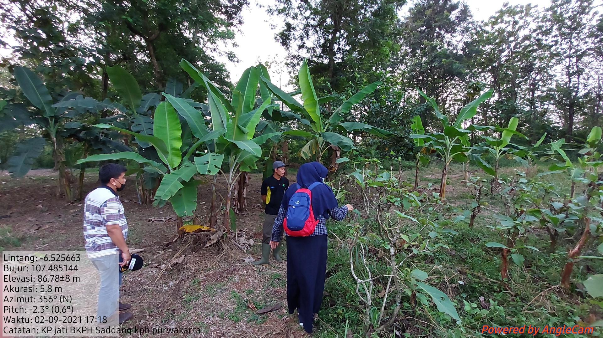
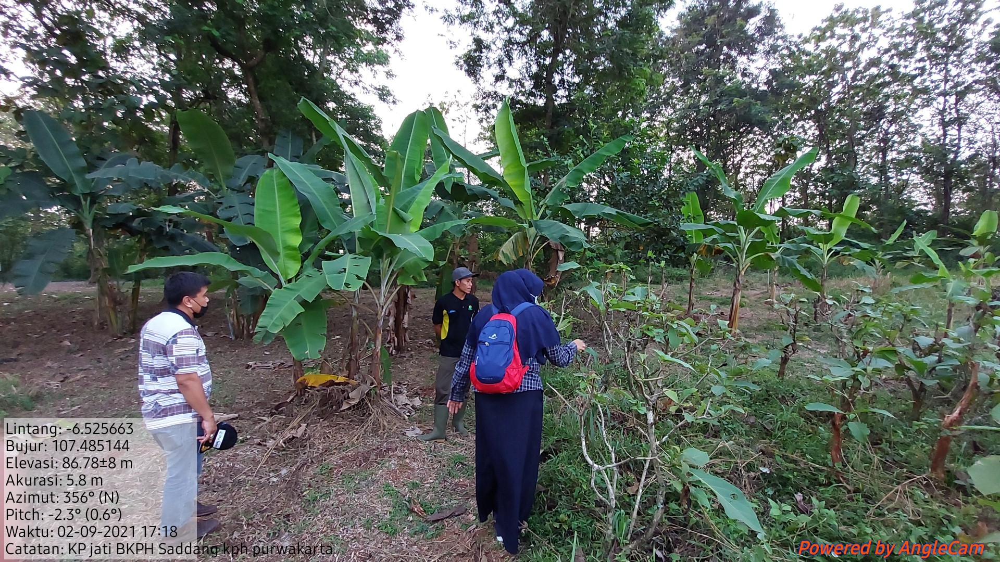
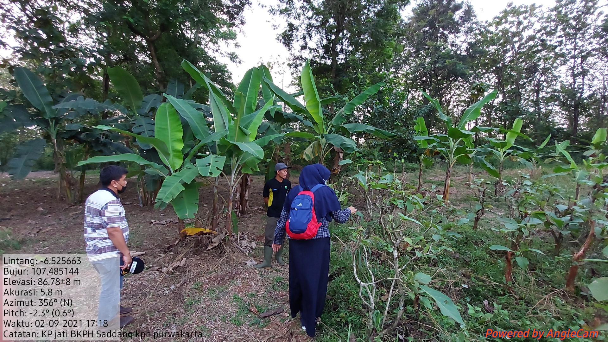

Nomor Sumber Benih
32.14.139
Nama Lokal
Jati
Nama Botani
Tectona grandis
Luas (Ha)
0,70
Kelas SB
KP
Bioregion
Jawa Madura
UPT
BPDASHL Citarum Ciliwung
Provinsi
Jawa Barat
Kabupaten
KPH Purwakarta
Kecamatan
BKPH Sadang
Desa
RPH Campaka
Garis Lintang
-6,592946
Garis Bujur
107,76541
Pemilik
Perum Perhutani Divre Jawa Barat dan Banten (KPH Purwakarta)
Alamat Pemilik
Jl. Soekarno Hatta No. Bandung
Jenis Kepemilikan
Instansi Pemerintahan
Nomor Sertifikat Sumber Benih
009/BPTH.I-3/2019
Tanggal Sertifikat Sumber Benih
02-April-2018
Masa berlaku Sertifikat Sumber Benih
03-April-2024
Jumlah Pohon
13
Musim Pembungaan
Januri s/d Maret dan Juli s/d September
Musim Buah Masak
Februari s/d April dan Agustus s/d Oktober
Estimasi Produksi Benih
1,098,240.00 Ortet
Estimasi Jumlah Benih
-
Hasil Rata-Rata Pengunduhan/ Periode Panen
-
Pemanfaatan
Digunakan sendiri
